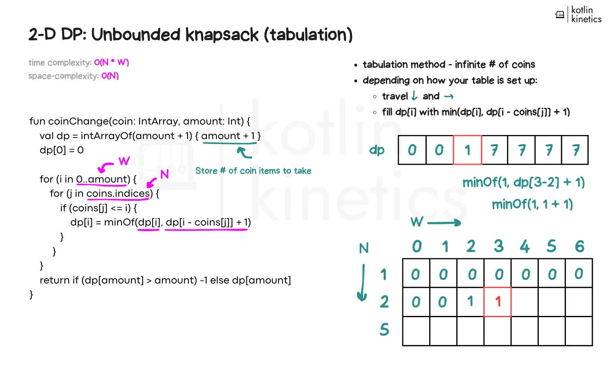

You're new to coding, and you're eager to get your foot in the door.
You're part of the large majority of Java users who haven't yet made the transition to Kotlin.

You're familiar with using Kotlin, but still fall back to Java when you need to get things done.
Your team is ready to transition to Kotlin, but unsure how to get up-to-speed & transition quickly.
No matter where you’re starting. We’ve all been beginners at one point.
Get access to premium Kotlin content designed to boost your coding skills and accelerate your learning journey. Whether you're learning Kotlin for Android development, transitioning from Java, or preparing for technical interviews, this is the perfect place to level up.
Coding Kinetics simplifies the learning journey for novice developers with hands-on exercises and real-world examples to boost confidence and accelerate mastery.
You might be interested in these workshop packages:
Ideal for individuals looking for a structured introduction to Kotlin/Android/Tech topics
Minimal interaction, focused on core concepts
Don’t miss out on the next popup! Sign up below to receive email updates on new workshops, exclusive offers, and product developments.
Sign UpDon’t let syntax differences or new programming paradigms slow you down.
Get access to premium Kotlin content designed to boost your coding skills and accelerate your learning journey. Whether you're learning Kotlin for Android development, transitioning from Java, or preparing for technical interviews, this is the perfect place to level up.
Coding Kinetics simplifies the transition for Java developers with hands-on exercises and real-world examples to boost confidence and accelerate mastery.
Don’t miss out on the next popup! Sign up below to receive email updates on new workshops, exclusive offers, and product developments.
It shouldn't have to feel like navigating a maze between coroutines, advanced syntax, and best practices.

Get access to premium Kotlin content designed to boost your coding skills and accelerate your learning journey. Whether you're learning Kotlin for Android development, transitioning from Java, or preparing for technical interviews, this is the perfect place to level up.
Coding Kinetics helps experienced Kotlin developers fine-tune their skills with hands-on exercises and real-world examples. Deepen your expertise, tackle advanced features, and gain new techniques to accelerate your Kotlin mastery.
Don’t miss out on the next popup! Sign up below to receive email updates on new workshops, exclusive offers, and product developments.
Subscribe to keep up with new workshops that come out; as a thank you, you can choose to receive one of the following workshop abstracts via downloadable PDF.
Sample 1
Sample 2
Sample 3
Intermediate Workshop Package
Target Audience: Java Engineers
This workshop explores how Kotlin boosts productivity in day-to-day development. Attendees will walk through digestible, relatable examples in:
This workshop will help attendees walk out feeling confident of their strategy to integrate Kotlin into existing projects and make their applications reliable and performant.
Intermediate Workshop Package
Target Audience: Kotlin engineers
In this workshop, attendees will:
This workshop will have attendees looking at coroutines differently by its end.
Advanced Specialty Workshop Package
Target Audience: Android engineers
In this hands-on workshop, you'll learn how to make Kotlin work for you through:
Leave with the skills to start building efficient Android apps using Kotlin.